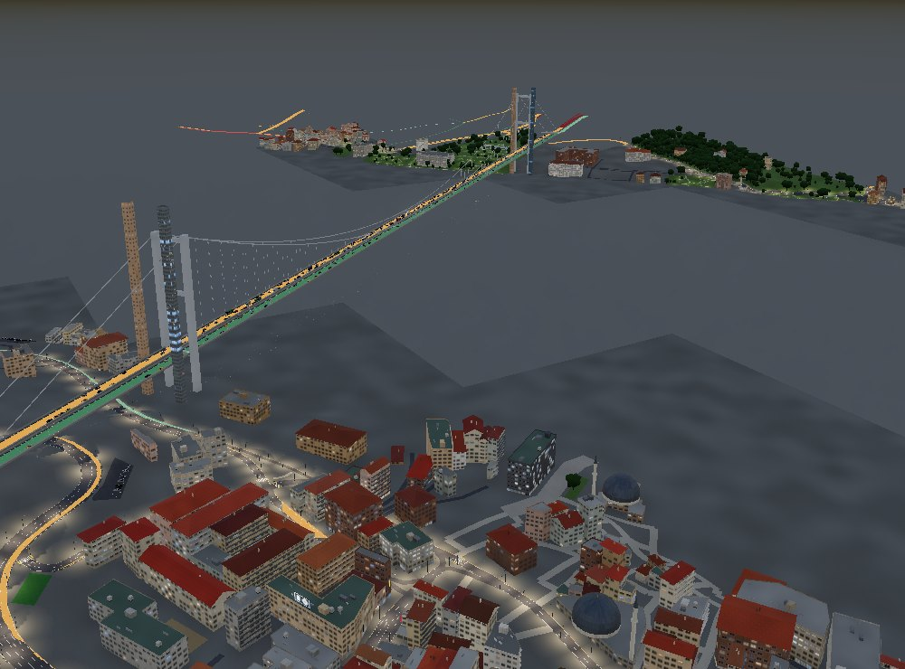
Bu çalışma, İstanbul'un en yoğun iş ve geçiş koridorlarından biri olan Maslak – Levent – Mecidiyeköy – Beşiktaş – 15 Temmuz Şehitler Köprüsü hattı için tamamen açık veriden kurulan bir ulaşım dijital ikizini anlatır. Sistemin iki yüzü vardır: tarayıcıda çalışan, OpenStreetMap'ten prosedürel olarak üretilmiş bir 3D şehir ve bunun altında çalışan, SUMO tabanlı bir ulaşım modeli.
Araştırma sorusu şudur: Yalnızca hız ölçen bir sensör ağından, bir trafik simülatörünün ihtiyaç duyduğu başlangıç–varış (O-D) matrisi ne kadar güvenilir çıkarılabilir? İBB'nin canlı akışı her yol kesimi için hız ve sıkışıklık sınıfı verir, araç sayısı vermez. Çalışmanın yöntemsel katkısı, hızı sahte bir sayıma çevirmek yerine sansürlü bir gözlem olarak kullanmaktır: serbest akış hızı yalnızca bir üst sınır, kuyruk ise bir alt sınır verir. Tahminci, her O-D çifti için sonucun ne kadarının veriden geldiğini (veri payı) ve talebin toplam düzeyinin sayımlarla gerçekten sabitlenip sabitlenmediğini ayrıca ölçer. Doğrulama, modelin hiç görmediği sayımlarda yapılır.
Mikroskobik ya da mezoskobik bir trafik simülatörü (SUMO gibi) çalışmak için bir O-D matrisine ihtiyaç duyar: her zon çifti arasında saatte kaç araç yolculuğu yapıldığı. İBB'nin Ulaşım Yönetim Merkezi akışı ise koridordaki yaklaşık 1.000 yol kesimi için yalnızca ortalama hız ve beş kademeli bir sıkışıklık sınıfı verir. Gerçek araç sayımı az ve seyrektir: koridordaki 27 İBB sensörü günlük toplam verir.
Problem kötü konumlanmıştır (ill-posed): 95 zon için 9.025 O-D çifti vardır, bağımsız gözlem sayısı ise birkaç yüzdür. Veri tek başına matrisi belirleyemez; bir ön bilgi (prior) gerekir ve sonucun ne kadarının bu ön bilgiden geldiği bilinmelidir.
Literatürdeki yaygın yol, hızı bir temel diyagram üzerinden akıma çevirip sayım gibi kullanmaktır. Ancak serbest akış hızındaki bir yol, 0 ile kapasite arasında herhangi bir akımı taşıyabilir: hız akımı belirlemez. Hızı sahte sayıma çevirmek, verinin taşımadığı bir kesinliği modele sokar. Ayrıca çoğu çalışma, tahminin ne kadarının veriden geldiğini raporlamaz ve doğrulamayı modelin zaten uydurulduğu sayımlar üzerinde yapar.
| Katkı | İçerik | Durum |
|---|---|---|
| Hız = sansürlü gözlem | Serbest akış hızı akım için yalnızca üst sınır, sıkışık daldaki hız alt sınır verir. Hız modele tek taraflı kısıt olarak girer. | Uygulandı |
| Veri payı | Her O-D çifti için sonsal varyansın prior varyansına oranı (Laplace yaklaşımı). Veriyle belirlenemeyen talep işaretlenir. | Uygulandı |
| Talep düzeyinin tanımlanabilirliği | Tüm matrisin düzeyi ayrı bir çarpanla taşınır; profil eğriliğiyle sayımların düzeyi sabitleyip sabitlemediği ölçülür. | Uygulandı |
| Dürüst doğrulama | GEH, her sayım tek tek dışarıda bırakılarak ölçülür. | Uygulandı |
| Bilevel tahmin | UE ataması ve tahmin dönüşümlü; ardışık ortalamalarla sönümlenir. | Uygulandı |
| Çok kaynaklı çapalar | Link sayımları, matris toplamları (köprü yönü, İstanbulkart) ve hız sınırları aynı tahmine girer. | Uygulandı |
| Simülasyondan gerçeğe ters çözücü | Simüle edilmiş (O-D → hız) örnekleriyle eğitilen sinir ağı; MAP tahmincisi denetçi. | İlk sürüm |
| Gölge simülasyon | Kapanma anında SUMO durumu çatallanır, politikalar gerçek zamandan hızlı yarışır. | İlk sürüm |
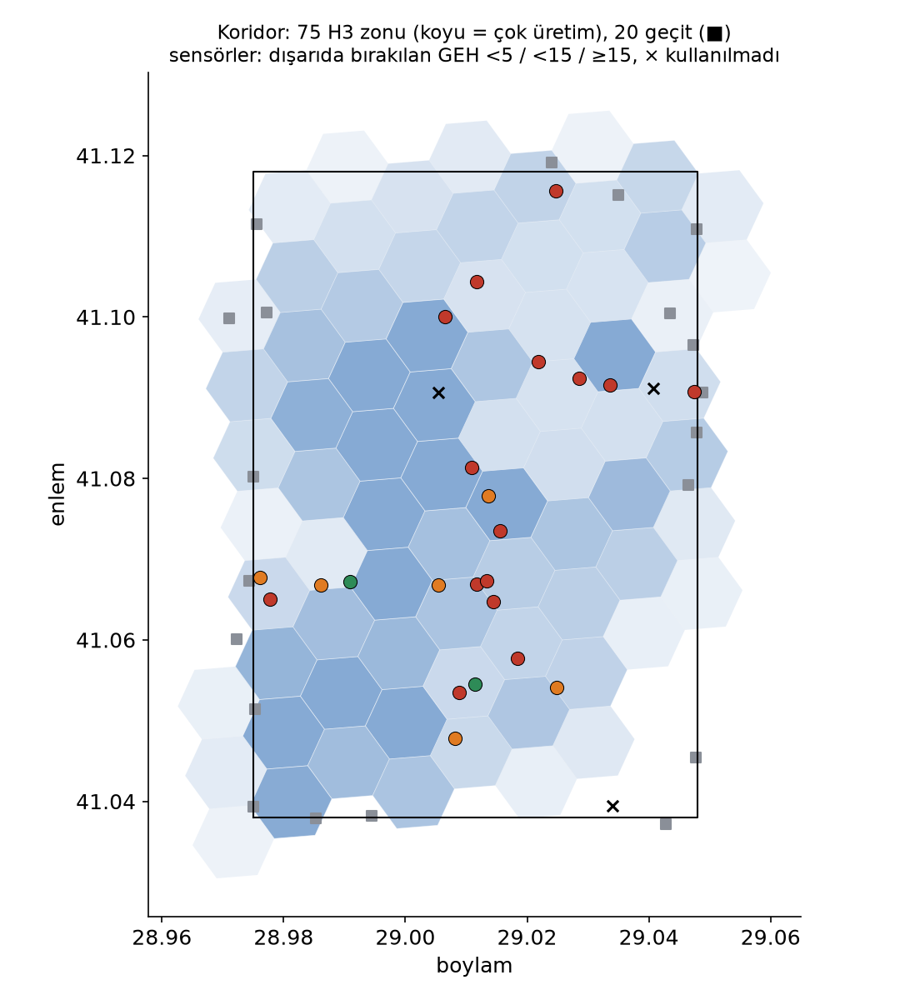
Alan: Enlem 41,038–41,118, boylam 28,975–29,048 (yaklaşık 5,9 × 8,9 km). Beşiktaş – Maslak ekseni (Büyükdere Caddesi, Barbaros Bulvarı), O-1 ve O-2 çevre yolları, 15 Temmuz Köprüsü'nün Avrupa yakası.
| Veri | Kaynak | Kullanım |
|---|---|---|
| Yol ağı, binalar, POI | OpenStreetMap | SUMO ağı, prior, 3D |
| Canlı segment hızı | İBB UYM | sansürlü gözlem |
| Günlük araç sayımı (2024) | İBB Açık Veri | sayım kesitleri |
| Saatlik trafik yoğunluğu | İBB Açık Veri | günlükten saatliğe |
| Saatlik toplu ulaşım | İBB Açık Veri | İstanbulkart çapası |
| Ulaşım modeli ağı (2020) | İBB Açık Veri | kapasite, BPR |
| Hanehalkı anketi (2012) | İBB Açık Veri | yolculuk tipi payları |
| Sayısal yükseklik | Mapzen / SRTM | arazi |
Tüm ham veriler komutla yeniden indirilir; depoda yalnızca kod, küçük yapılandırma dosyaları ve rapor çıktıları tutulur. Canlı hız akışı ayrıca 5 dakikada bir Parquet olarak arşivlenir (npm run archive:ibb), böylece her tahmin tekrar üretilebilir.
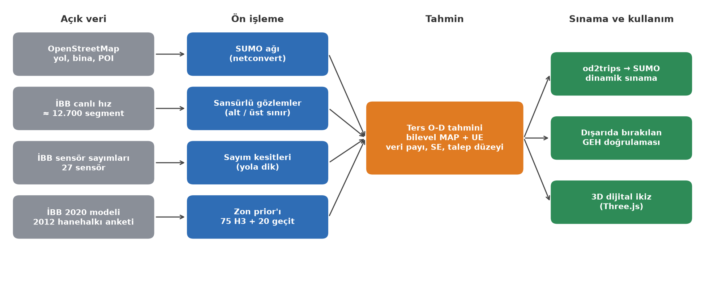
Hat dört katmandan oluşur:
netconvert), İBB hız segmentlerinin ağa eşlenmesi, sayımların yola dik kesitlere dönüştürülmesi, zonların ve prior'ın kurulması.tools/od/odme.py): her O-D çifti için tahmin, standart hata ve veri payı; talep düzeyinin tanımlanabilirliği.od2trips), dışarıda bırakılan GEH doğrulaması, gölge simülasyon ve 3D istemci.| Bileşen | Dil / araç | Konum |
|---|---|---|
| 3D motor ve arayüz | JavaScript, Three.js, Vite | src/world, src/shared |
| 3D veri hattı (OSM, DEM → karolar) | Node.js | tools/pipeline |
| SUMO ağı, eşleme, simülasyon | Python, SUMO 1.27, sumolib | tools/sumo |
| Ters O-D tahmini, çapalar, sinir ağı | Python, NumPy, SciPy, scikit-learn | tools/od |
| Canlı hız arşivi | Python, PyArrow | tools/archive |
| Rapor ve sunum grafikleri | Python, Matplotlib, Marp | tools/report, docs |
Koridorun OSM verisi netconvert ile SUMO ağına dönüştürülür (tools/sumo/build_net.py). Sinyal programları, köprü ve viyadük katmanları, metrobüsün ayrık şeridi ve dönüş yasakları korunur. Ağ, demand yüklenmeden önce bir duman testinden geçer (smoke_test.py).
| Ölçüt | Değer |
|---|---|
| Kenar / kavşak | 21.173 / 8.963 |
| Şerit-km / yol-km | 1.588 / 1.326 |
| Sinyalli kavşak / sinyal programı | 293 / 179 |
| Karşılıklı erişilebilir araç kenarı (en büyük güçlü bağlı bileşen) | %98,3 |
| Metrobüs ayrık şeridi | 11,8 km |
| İBB segment eşlemesi (1.083 segmentten) | %95,5 |
Her İBB segmenti 12 m aralıkla örneklenir; her örnek 18 m içindeki, aynı yöne (±35°) giden en yakın araç kenarına bağlanır. Bir segmentin kenarları kapsama uzunluğuyla tutulur, tahminde en uzun kapsamalı kenar kullanılır. Bölünmüş yollarda en yakın kenar çoğu zaman karşı yöndür; yön kontrolü bu hatayı önler.
İBB'nin kalibre edilmiş 2020 ulaşım modeli ağı (KMZ, 29.663 link), yön kontrolüyle SUMO kenarlarına eşlenir (map_ibb_model.py). Eşleşen kenarlarda İBB'nin kapasitesi, serbest akış hızı ve BPR katsayıları kullanılır; eşleşmeyenler İBB'nin sınıf bazlı değerlerini alır (otoyol/trunk α = 0,158, β = 3,483; diğer yollar α = 0,924, β = 3,464). Eşleşme oranı otoyolda %92, ana ve tali arterde %77–78'dir.
Atama için her araç kenarı bir BPR linkidir; paralel kenarlar birleştirilir. İç zonlar H3 çözünürlük 8 hücreleridir (yaklaşık 0,74 km²) ve hücre merkezine en yakın üç yerel yol düğümüne bağlanır. Alan sınırını kesen ana yollar 500 m içinde kümelenerek 20 geçit zonu oluşturur; böylece köprüden geçen transit trafiğin de bir başlangıcı ve varışı olur. Her zonun ayrı bir kaynak ve yutak düğümü vardır, böylece rotalar zon merkezinden kısa yol yapamaz.
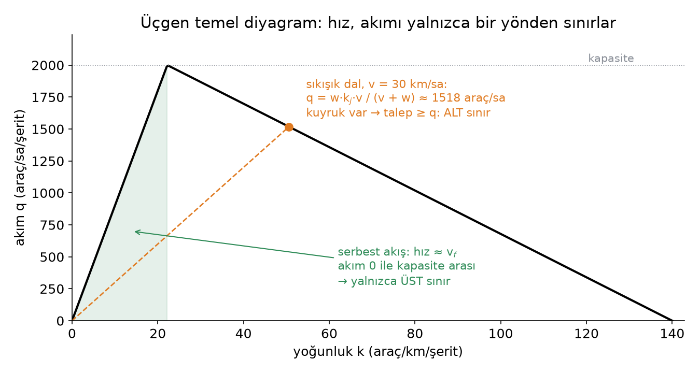
Üçgen temel diyagramda (Newell 1993; Daganzo 1994) şerit başına akım q, yoğunluk k'nın parçalı doğrusal bir fonksiyonudur: serbest akış dalında q = vf·k, sıkışık dalda q = w·(kj − k). Buradan iki sonuç çıkar:
Bir segmentin hangi dalda olduğunu, operatörün segment bazındaki tarihsel bilgisini içeren İBB sıkışıklık sınıfı belirler (1–2: serbest, 3–5: sıkışık).
Atama matrisi P (Pe,w: w çiftinin yolculuklarının e linkini kullanan payı) için link akımları Px'tir. Tahmin, aşağıdaki maksimum sonsal (MAP) problemidir:
Sayımlar iki taraflı, hız sınırları tek taraflı kare cezalarla girer; çapalar (Bölüm 8) doğrudan O-D toplamlarını kısıtlar. Son terim, verinin sessiz kaldığı yerde tahmini prior x0'a yakın tutan genelleştirilmiş Kullback–Leibler uzaklığıdır. Her çift için ağırlık λw = 2 / (cv² · x0,w) seçilir; böylece prior'ın belirsizliği mutlak değil göreli olur (cv = 1: ±%100). Tek bir λ, 10 yolculukluk bir çifti ±4,5'e kilitlerdi; bu bir çekim modelinin hak ettiğinden çok daha sıkıdır.
Bağımsız çift hataları, çok sayıda çiftin toplamı olan bir link akımını neredeyse kesin sanır, çünkü hatalar ortalamada birbirini götürür. Gerçekte bir prior'ın hataları ilişkilidir: bir zonun yolculuk oranı yanlışsa o zonun tüm çiftleri yanlıştır. Tahmin bu yüzden şu biçimde parametrelenir:
ai ve bj zonun üretim ve çekim çarpanlarıdır: veri, bir zonun tüm trafiğini tek bir sayıyla düzeltebilir. g tüm matrisin düzeyini taşır. Optimizasyon log-uzayda (z = x0·eu) L-BFGS-B ile yapılır: pozitiflik kendiliğinden sağlanır ve prior değerleri 12 mertebeye yayılsa da problem iyi koşullanır; KL teriminin eğriliği her çift için aynı olur.
Amaç fonksiyonu −2 log sonsaldır; optimumdaki Hessian H'nin tersi (Laplace yaklaşımı) kovaryansı verir: Σ = 2H−1. Hessian, KL teriminden gelen köşegen D = λ/z ile aktif gözlem satırlarından gelen B'B toplamıdır. Yalnızca köşegen gerektiği ve aktif satır sayısı m, çift sayısı n'den çok küçük olduğu için Woodbury özdeşliği kullanılır:
Bu, n × n yerine m × m bir çözüm demektir. Her çiftin veri payı 1 − σ²sonsal / σ²prior olarak tanımlanır: 0 değeri tahminin tamamen prior'dan, 1 değeri tamamen veriden geldiğini söyler.
Çift bazındaki standart hatalar düzey hakkında yanıltıcıdır: bağımsız hatalar toplandığında kesin görünür. Düzeyin belirsizliği bu yüzden ayrıca, profil amaç fonksiyonunun eğriliğinden hesaplanır. g, tahmin edilen değerin ±0,05 yakınında sabitlenir, diğer tüm parametreler yeniden optimize edilir ve ikinci fark alınır:
Veri payı 0,8'in üzerindeyse düzey sayımlarla sabitlenmiş sayılır ve summary.json bunu açıkça yazar; altındaysa "kısmen belirlenmiş" ya da "belirlenmemiş" der. Bu ölçüt, sayım verildi diye düzeyin sabitlendiğini varsaymayı önler.
Rota seçimi talebe bağlıdır: P, x'in fonksiyonudur. Tahmin, Frank–Wolfe ile çözülen kullanıcı dengesi (UE) ataması ile sabit P için MAP tahmini arasında dönüşümlü çalışır (Spiess 1990; Yang ve ark. 1992). Basit dönüşüm salınır (daha çok talep → başka rotalar → başka uyum); bu yüzden atama matrisi turlar boyunca ardışık ortalamalarla (MSA) ortalanır. Frank–Wolfe, akımlarla aynı adımla P'yi de taşır; böylece her iterasyonda Px akımlara eşit kalır.
Ölçüt, İngiltere Ulaştırma Bakanlığı TAG M3.1'deki GEH istatistiğidir: GEH = √(2(M − C)² / (M + C)); sayımların en az %85'inde GEH < 5 beklenir. Uyum, modelin gördüğü sayımlarda hiçbir şey kanıtlamaz. GEH bu yüzden üç biçimde raporlanır: prior, uyum (sayımlar görüldü) ve dışarıda bırakılan: her sayım tek tek çıkarılır, kalanlarla tahmin yapılır ve çıkarılan sayım tahmin edilir.
Yöntem önce gerçek O-D'si bilinen bir şehirde sınanır (tools/od/test_odme.py, 34 kontrol). Ağ, iki arterli 6 × 6 bir ızgaradır; 10 zon ve 90 O-D çifti vardır. Linklerin %30'u gürültülü sayımla gözlenir, kalanlarda yalnızca hız kullanılır. Prior, gerçeğin gürültülü ve %20 düşük bir kopyasıdır.
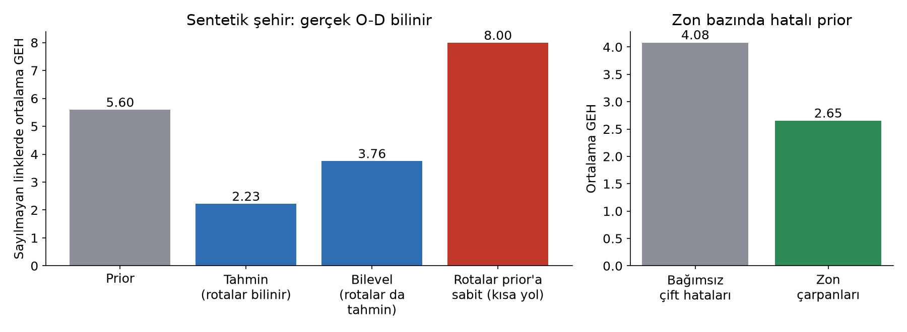
| Kontrol | Sonuç |
|---|---|
| Sayılmayan linklerde akım (rotalar biliniyor) | GEH 5,60 → 2,23 |
| Sayılmayan linklerde akım (bilevel) | GEH 5,60 → 3,76; rotalar prior'a sabitken 8,00 |
| Belirsizlik kalibrasyonu | Gerçek değerlerin %96'sı 2,5 standart hata içinde |
| Zon bazında hatalı prior | Zon çarpanlarıyla GEH 4,08 → 2,65 |
| Gözlem yokken | Tahmin prior'a eşit, veri payı 0 |
| O-D toplamı çapası | Çapa karşılanır; adı geçmeyen çiftler prior'da kalır (×1,04) |
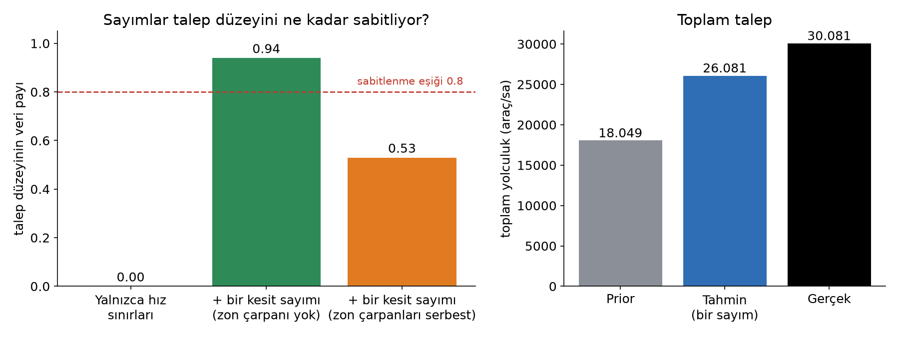
Bu sonuç önemli bir tasarım kuralı verir: zon çarpanları serbest olduğunda tek bir sayım, kestiği zonları büyüterek de karşılanabilir. Düzeyi gerçekten sabitlemek için bağımsız zonları kesen birden çok sayım gerekir. Ölçüt (4), bu durumu sayım sayısına bakmadan, doğrudan ayırt eder.
İBB sensörleri bir noktadır. Her sensörün sayımı, o noktadan geçen ve yola dik bir sayım kesiti olarak modellenir: en yakın sayım sınıfı yolun (aynı ad, paralel) tüm taşıt yollarını keser. Günlük toplam, aynı gün ve aynı geohash hücresindeki prob araçlarının saatlik payıyla saatliğe çevrilir; sensör başına değer, ayın ilgili hafta günlerinin medyanıdır. Standart sapma, günler arası yayılım artı payın kendi hatası için %10'dur. Denetim, birkaç eşleme hatasını düzeltti:
| Sensör | Günlük | İlk eşleme | Düzeltme |
|---|---|---|---|
| Mecidiyeköy | 110 bin | yan cadde (rota yok) | O-1 |
| Çağlayan Kavşağı | 103 bin | tek şeritli sokak | O-1 |
| TEM Karanfilköy | 103 bin | Uğur Mumcu Caddesi | O-2 |
| FSM Gişeler | 81 bin | köprü girişiyle aynı kenarlar | çıkarıldı (yalnızca gişe şeritleri) |
| TEM FSM Gişe Öncesi | 98 bin | iki yön | tek yön |
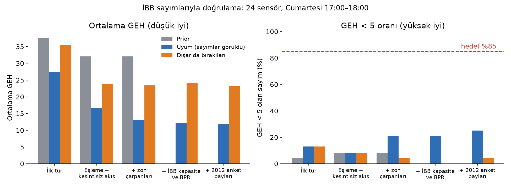
Dışarıda bırakılan ortalama GEH 35,6'dan 23,2'ye indi, ancak GEH < 5 ölçütü uzakta kaldı. Link parametreleri darboğaz değildir; kalan hata prior'ın yapısından ve sensör tanımlarındaki çelişkiden gelir. Örneğin üç O-2 sensörü (4.291 / 7.108 / 8.171 araç/sa) modelde aynı akıma oturur; aralarında rampa yoksa bu mümkün değildir, yani yön ya da şerit kapsamları farklı olmalıdır.
Canlı İBB hızları (Pazartesi 11:30) ve Ekim 2024 Pazartesi 11:00–12:00 sayımlarıyla (23 sensör) düzey ayrıca tahmin edildi.
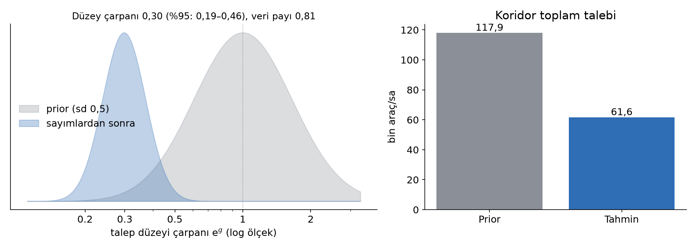
| Ölçüt | Sonuç |
|---|---|
| Düzey çarpanı (%95 aralık) | 0,30 (0,19–0,46); prior sd 0,5 |
| Düzeyin veri payı | 0,81: sayımlarla sabitlendi |
| Toplam talep | Prior 117,9 bin, tahmin 61,6 bin araç/sa |
| Gözlemler | 249 üst sınır, 13 alt sınır, 23 sayım; 463 sıkışık arter segmenti kural gereği kullanılmadı |
| GEH < 5 (ortalama) | Prior %4,3 (37,8); uyum %17,4 (12,2); dışarıda bırakılan %8,7 (22,9) |
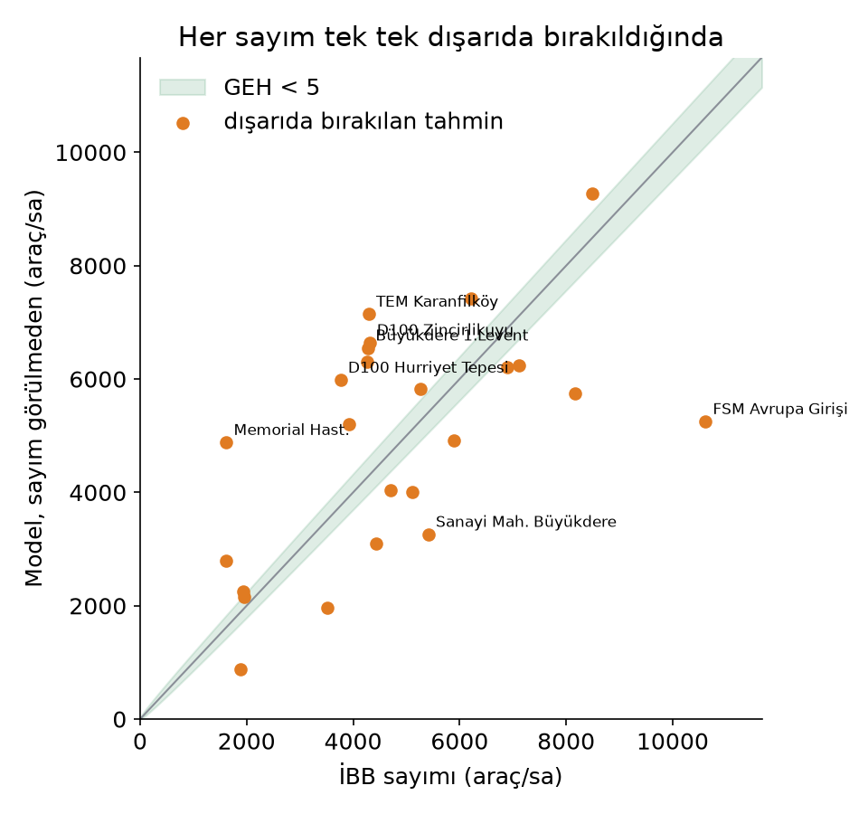
Yorum. Arazi kullanımından kurulan prior, toplam talebi neredeyse iki kat yüksek gösteriyordu (117,9 bine karşı 61,6 bin). Düzey çarpanı 0,30 tek başına daha büyük bir düşüş söyler; zon çarpanları bunun bir kısmını geri alır. Bu, sayımsız tahminin SUMO'da ağı kilitlemesinin (Bölüm 9) doğrudan açıklamasıdır. Düzey artık veriden gelir.
Dışarıda bırakılan GEH ise talebin zonlar arasındaki dağılımının hâlâ zayıf olduğunu gösterir. En büyük sapmalar FSM Avrupa girişinde (model sayımın yaklaşık %60'ını taşıyabiliyor), O-2 sensörlerinde ve Maslak'tadır. Bunlar geçit prior'ının kaba olmasına ve sensör tanımlarına işaret eder.
Bu koşu farklı bir gün ve saate ait olduğu için Şekil 6'daki Cumartesi turlarıyla doğrudan karşılaştırılmamalıdır.
Bazı bilgiler bir linkten değil doğrudan matristen gelir: köprünün yön bazlı geçiş sayısı "Asya'dan gelen tüm yolculuklar", bir zonun toplu taşıma binişleri ise "bu zonların ürettiği yolculuklar" hakkında bilgi verir. Tahminciye bu yüzden yeni bir gözlem türü eklendi: O-D toplamı (od_sum). Bir çapa, adı verilen O-D çiftlerinin toplamını c ± σ olarak kısıtlar (denklem 1'deki A satırları). Çapalar tools/od/anchors.py ile üretilir ve tahmine --anchors ile girer; seçiciler "h3" (tüm iç zonlar), "*" (tüm zonlar) ya da zon kimlikleridir.
İBB "Saatlik Toplu Ulaşım" verisinde koridordaki 31 raylı sistem (M2, M6, M7, F4, Gayrettepe–Kağıthane) ve metrobüs durağında (Mecidiyeköy, Zincirlikuyu) hafta içi 11:00–12:00 saatinde medyan 11.764 biniş vardır (eksiksiz 5 iş gününün medyanı). Otobüs satırları dışarıda bırakıldı: bu veride otobüsler için "ilçe" alanı biniş yerini değil hattın kaydını gösteriyor. Binişlerin, koridor zonlarının ürettiği otomobil yolculuğuna oranı bir varsayımdır (1,0, log-sd 0,7); çapa bilerek zayıf tutuldu.
| Yalnızca sayımlar | Sayımlar + İstanbulkart | |
|---|---|---|
| Koridor zonlarının ürettiği yolculuk | 15,6 bin (prior 57,4 bin) | 15,6 bin (çapa 11,8 ± 11,9 bin) |
| Düzeyin veri payı | 0,807 | 0,815 |
| Dışarıda bırakılan ortalama GEH | 22,86 | 22,71 |
Sonuç: bu bir doğrulama değil, kaba bir makullük kontrolüdür. Biniş ile otomobil yolculuğu arasındaki 1:1 oran bir varsayımdır ve binişler aktarmaları ve koridordan geçen yolcuları da içerir; bu yüzden "uyum" büyük ölçüde varsayımın kendisinden gelir. Geniş belirsizlikle söyleyebildiği şudur: sayımlardan sonraki tahmin (15,6 bin) toplu taşıma kullanımıyla aynı büyüklüktedir, ilk tahmin (57,4 bin, binişlerin yaklaşık 5 katı) değildi. Gerçek bir sağlama için oran hanehalkı anketinin zon bazındaki ulaşım türü paylarından alınmalı ve aktarma binişleri ayrılmalıdır. Köprünün yön bazlı KGM sayımı aynı yoldan girer (--bridge-eu-as, --bridge-as-eu); bu veri henüz elde edilmedi.
tools/sumo/run_od.py, saatlik matrisi 90 dakikaya yayar, od2trips ile yolculuklara çevirir ve mezoskopik modelde koşturur. Araçlar kalkışta rota seçer ve iki dakikada bir o anki seyahat sürelerine göre yeniden rota seçer; bu, kullanıcı dengesinin tek koşuluk bir yaklaşımıdır. Benzetilen hızlar, tahminin yapıldığı İBB görüntüsüyle segment segment karşılaştırılır.
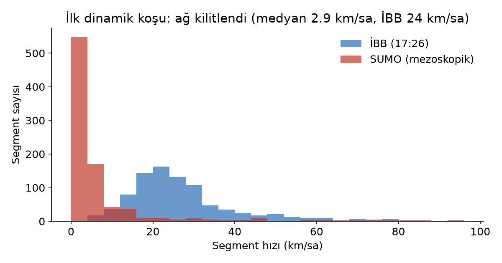
Sayımsız talep: 192.551 aracın yalnızca 102.735'i ağa girebildi; medyan hız 2,9 km/sa (İBB: 24 km/sa). Köprüde sayım 8,5 bin araç/sa iken tahmin 13,9 bin yüklemişti.
Sabitlenmiş talep (61,6 bin araç/sa): 90 dakikalık koşu 76. dakikaya kadar ilerledi; bu sürede 415 araç sıkışma nedeniyle ışınlandı, ardından koşu ilerlemeyi durdurdu. Düzey düşse de bazı düğümlerde (zon bağlantıları, Zincirlikuyu örgülenmesi) yerel kilitlenmeler sürüyor; zon girişlerinin daha çok kenara yayılması sıradaki iştir.
Gölge simülasyon (tools/sumo/shadow.py) bir kaza ya da kapanma anında şu soruyu yanıtlar: hangi müdahale daha az gecikme üretir?
no_incident: referans, yol açık kalır;unaware: kenar kapanır, sürücüler bunu ancak kapanan kenardan hemen önce öğrenir;informed: kenar kapanır, 30 kenar yukarıdaki tüm araçlar anında bilgilendirilir (değişken mesaj levhaları, navigasyon) ve dakikada bir yeniden rota seçer.report.json'u anlatır.Koridordaki ilk sınamada, tahminde en yüklü otoyol kenarı olan 5 şeritli 2. Çevre Yolu (TEM) kesimi 20. dakikada kapatıldı ve her politika 20 dakika ileri koşturuldu (İstanbulkart çapalı tahmin, mezoskopik model, tek tohum).
| Politika | Varan araç | Birikim | Işınlanma | Ort. zaman kaybı | Gerçek zamana göre |
|---|---|---|---|---|---|
| Yol açık (referans) | 10.233 | 23.276 | 52 | 274 s | ×3,4 |
| Habersiz sürücüler | 9.655 | 23.854 | 123 | 277 s | ×4,3 |
| Anında bilgilendirme | 10.390 | 23.119 | 50 | 271 s | ×2,9 |
Karar: anında bilgilendirme. Habersiz duruma göre 20 dakikada 735 araç daha geçirir ve sıkışma kaynaklı ışınlanmayı 123'ten 50'ye indirir. Isınma ve üç dal birlikte yaklaşık 9 dakikada koştu; bir olay anında karar, olayın kendisinden önce hazır olur. Karar, varan araç ve birikim üzerinden verilir: yalnızca varan araçların zaman kaybı, kapanmanın arkasında takılanları içermediği için yanıltıcıdır.
MAP tahmincisi her görüntü için dakikalar süren bir optimizasyon gerektirir. Uzun vadeli hedef, canlı hızdan O-D'yi anlık okuyan bir sinir ağıdır; MAP tahmincisi bu ağın referansı ve denetçisi olur (tools/od/neural_inverse.py).
| Ölçüt (300 örnek, örnek başına 8,7 sn) | Sonuç |
|---|---|
| Dışarıda bırakılan örneklerde R² | Toplam 0,15; üretimler −0,41; çekimler −0,54 |
| Canlı görüntü | Ağ 295 bin araç/sa (eğitim aralığının tavanı); MAP 61,6 bin → oran 4,8 |
| Simülasyon-gerçek farkı | Hız oranı medyanı: gerçek 0,32, simülasyon 0,99; linklerin %45'i simüle edilen aralığın dışında |
| Denetçinin kararı | güvenilmez (trustworthy: false) |
3D istemci, Yong Su'nun "Tokyo" projesinden (MIT) türetilmiş bir Three.js motorudur ve tamamen açık veriden derlenir: OSM yolları, binaları, rayları, arazi örtüsü ve sayısal yükseklik modeli bir Node.js veri hattıyla (tools/pipeline) karolara dönüştürülür. Yol kesimleri İBB'nin canlı sıkışıklık sınıfıyla renklenir.
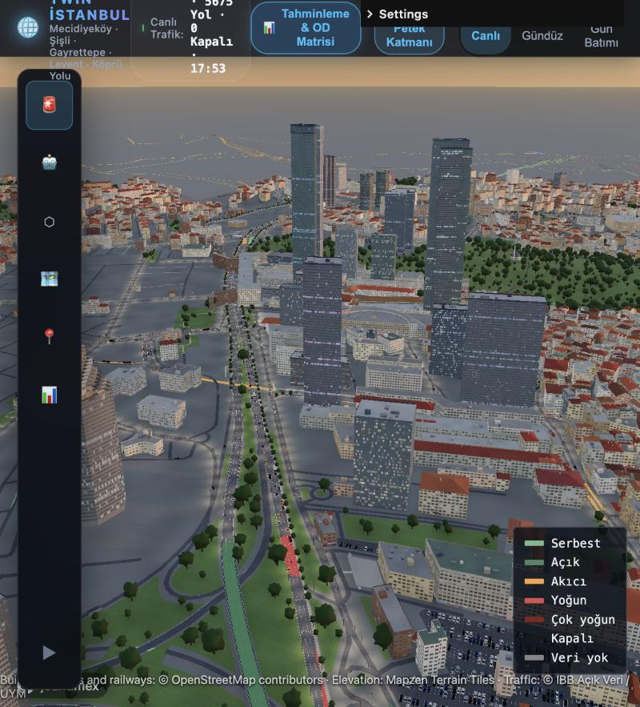
building:part verisinden kuleler.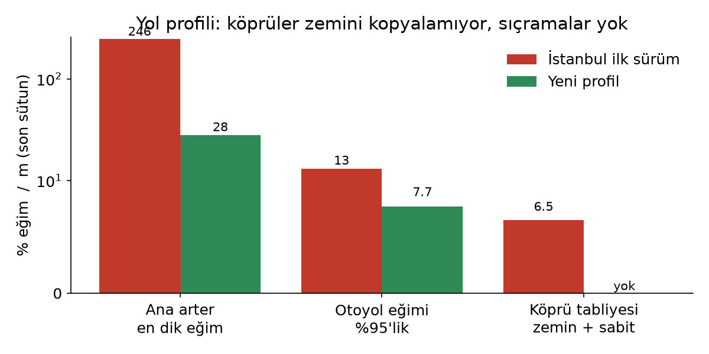
summary.json dosyasına yazılır. Tahmin, kullandığı hız görüntüsünü (speeds.csv) yanında saklar.tzdata) ve sistem kod sayfasıyla yazılan çıktılar düzeltildi; tüm çıktılar UTF-8.uv ile kilitlenir; SUMO 1.27.1 bir bağımlılık grubu olarak gelir (--group sumo), sinir ağı ayrı bir gruptadır (--group ml).tools/*/README.md dosyalarına kaydedilir.Hedef yayın yolu: TRB Annual Meeting / hEART (yöntem ve vaka), ardından Transportation Research Part C (çok haftalık doğrulama) ve açık veri seti makalesi.
Cascetta, E. (1984). Estimation of trip matrices from traffic counts and survey data: a generalized least squares estimator. Transportation Research Part B, 18(4–5).
Chaikin, G. M. (1974). An algorithm for high-speed curve generation. Computer Graphics and Image Processing, 3(4).
Daganzo, C. F. (1994). The cell transmission model. Transportation Research Part B, 28(4).
Frederix, R., Viti, F., Corthout, R., Tampère, C. M. J. (2011). New gradient approximation method for dynamic origin–destination matrix estimation on congested networks. Transportation Research Record, 2263.
Lopez, P. A. ve ark. (2018). Microscopic traffic simulation using SUMO. IEEE ITSC.
Newell, G. F. (1993). A simplified theory of kinematic waves in highway traffic. Transportation Research Part B, 27(4).
Spiess, H. (1990). A gradient approach for the O-D matrix adjustment problem. CRT, Université de Montréal.
Van Zuylen, H. J., Willumsen, L. G. (1980). The most likely trip matrix estimated from traffic counts. Transportation Research Part B, 14(3).
Yang, H., Sasaki, T., Iida, Y., Asakura, Y. (1992). Estimation of origin–destination matrices from link traffic counts on congested networks. Transportation Research Part B, 26(6).
UK Department for Transport. TAG Unit M3.1, Highway Assignment Modelling.
İBB Açık Veri Portalı (data.ibb.gov.tr): Günlük Araç Sayımı, Saatlik Trafik Yoğunluk, Saatlik Toplu Ulaşım, Ulaşım Talep Tahmin Modeli Verisi.
npm install
node tools/assets/fetch_textures.mjs # CC0 dokular
npm run fetch -- --area=koridor # OSM ve DEM
npm run compile -- --area=koridor # 3D karolar
npm run dev # http://localhost:5280/?area=koridor
npm run sumo:net -- --area=koridor # OSM → SUMO ağı
npm run sumo:map-ibb -- --area=koridor # İBB segmentleri → kenarlar
uv run python tools/od/ibb_model.py # İBB 2020 ağı (KMZ → Parquet)
uv run --group sumo python tools/sumo/map_ibb_model.py --area=koridor
uv run --group sumo python tools/od/counts.py --area=koridor --month=2024-10 --weekday=0 --hour=11
uv run python tools/od/anchors.py --area=koridor --month=2024-10 --hour=11
uv run --group sumo python tools/od/corridor.py --area=koridor \
--counts data/od/koridor/counts_202410_d0_h11.csv \
--anchors data/od/koridor/anchors_202410_h11.csv --tag anchors
uv run --group sumo python tools/sumo/run_od.py --area=koridor # dinamik koşu
uv run --group sumo python tools/sumo/shadow.py --area=koridor --narrate # gölge simülasyon
uv run --group sumo --group ml python tools/od/neural_inverse.py --samples 300
npm test # 3D veri hattı testleri
npm run test:od # ters O-D (34 kontrol)
uv run --with matplotlib python tools/report/figures.py # grafikler (TR ve EN)
| Parametre | Değer | Anlamı |
|---|---|---|
| Prior çift belirsizliği (cv) | 1,0 | her çift ±%100 |
| Zon çarpanı sd (log) | 1,0 | ×2,7 |
| Talep düzeyi sd (log) | 0,5 | ×0,6 – ×1,6 |
| Düzey sabitlenme eşiği | 0,8 | veri payı |
| Sinyalde yeşil payı | 0,45 | İBB parametresi olmayan kenarlar |
| Sıkışma yoğunluğu | 140 | araç/km/şerit |
| Varsayılan kat sayısı | 4 | OSM'de bilgi yoksa |
| Konut başına zirve saat otomobil yolculuğu | 0,30 | prior üretimi |
| Çekim modeli β | 0,08 / dk | çift kısıtlı çekim |
| Geçit kapasite kullanımı (giriş / çıkış) | 0,55 / 0,35 | zirve yönü |
| İstanbulkart biniş → otomobil yolculuğu | 1,0 (log-sd 0,7) | zayıf çapa |
| Köprü yön sayımı belirsizliği | %5 | gişe sayımı |
Tüm değerler tools/od/corridor.py ve tools/od/anchors.py içindeki ASSUMPTIONS sözlüklerinde tanımlıdır ve her tahminin summary.json dosyasına yazılır.